Installing flux towers and chambers, sampling soils and gases across rice and corn systems, and sharing results. Click any photo to enlarge.
Installing static gas-flux chambers in flooded riceStatic chambers marking sampling points across a rice paddyAn eddy covariance tower at the edge of a flooded rice field
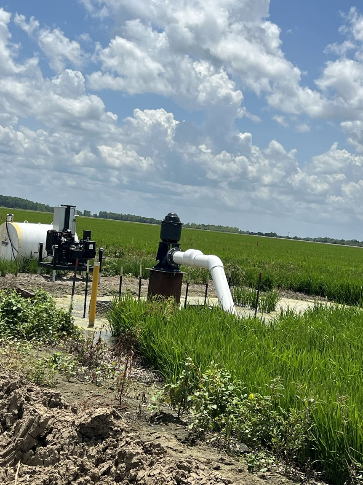
Irrigation infrastructure for tailwater-reuse riceCollecting greenhouse gas samples from a rice chamber
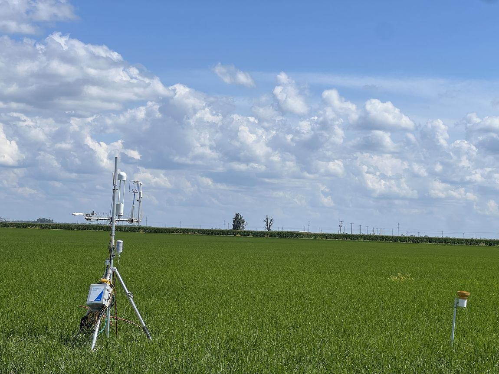
Eddy covariance flux tower in row rice
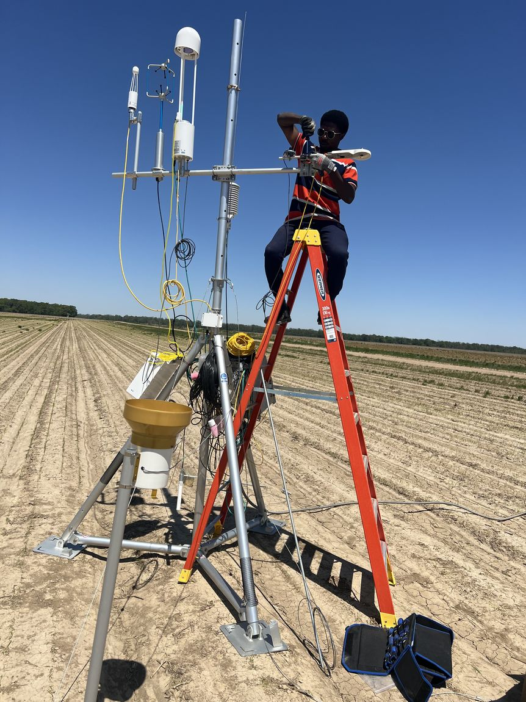
Assembling an eddy covariance tower in the field
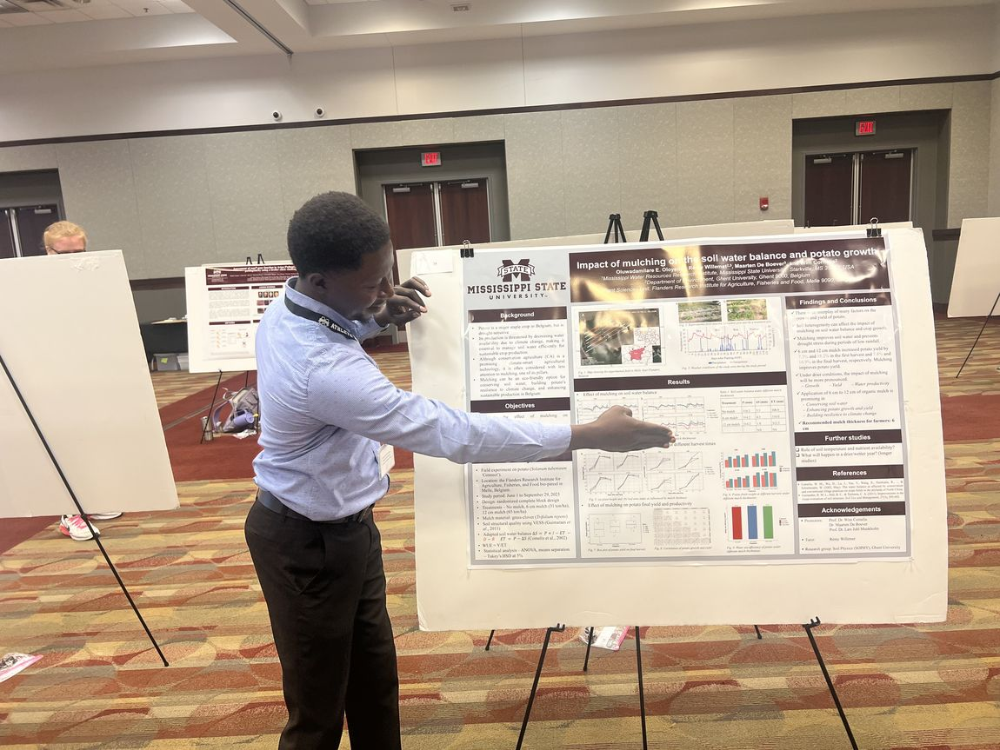
Field team servicing a flux tower
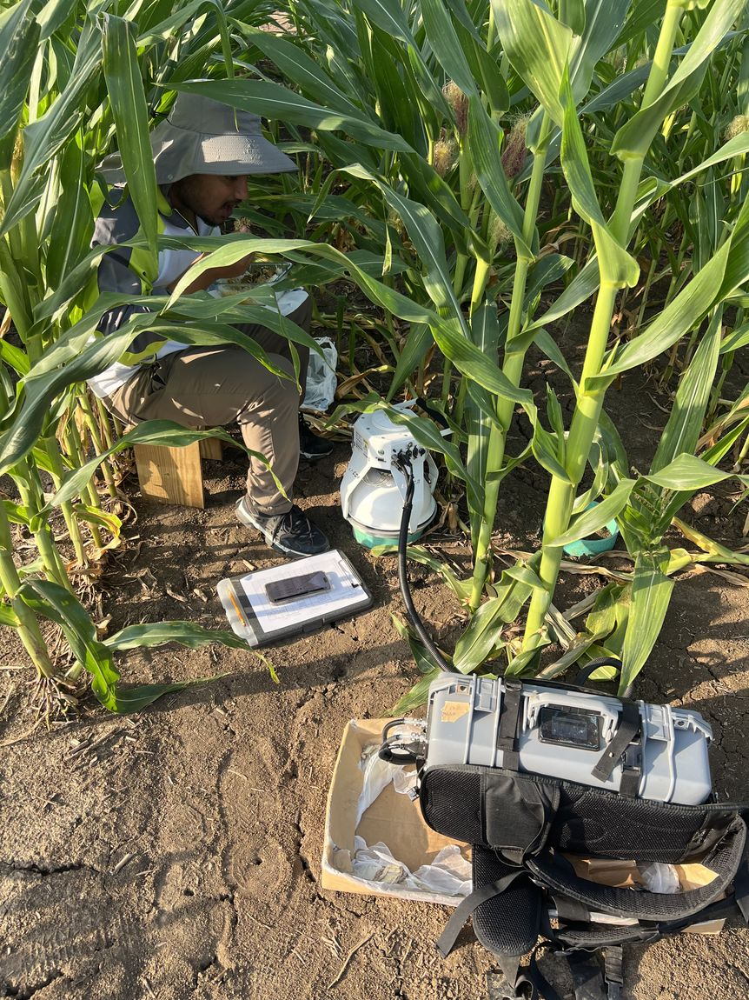
Measuring soil greenhouse gas fluxes in corn
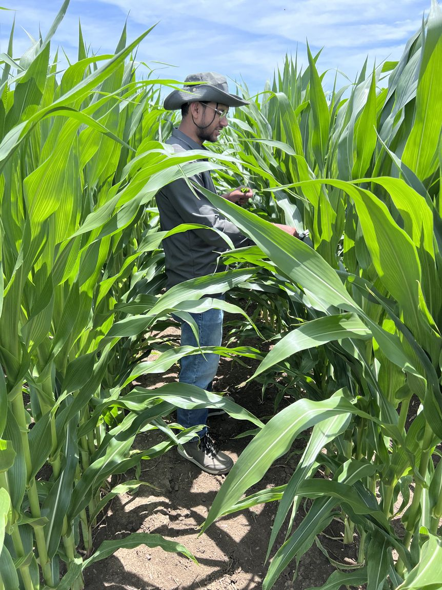
Scouting corn at the Black Belt research station
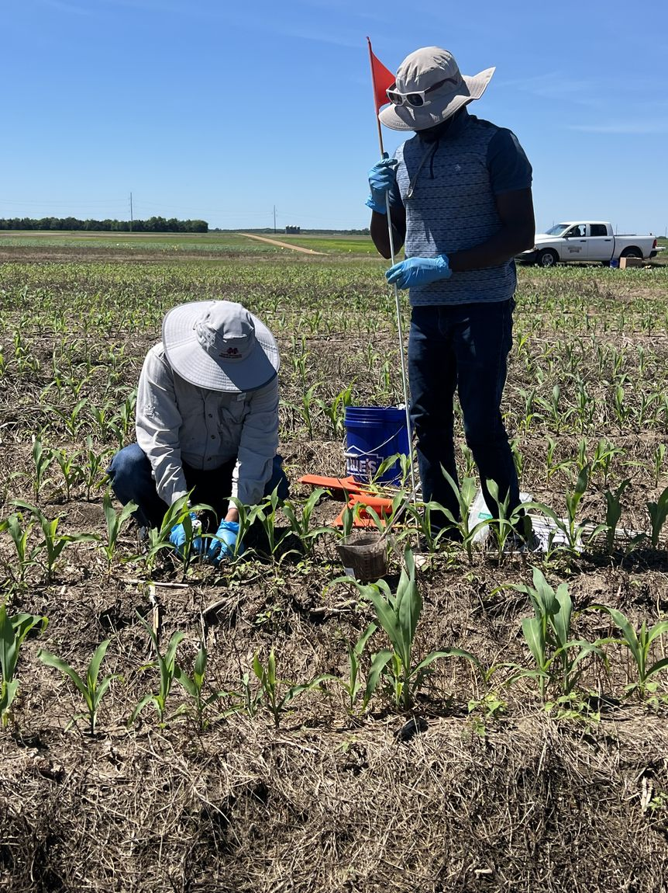
Soil sampling in a cover-cropped corn trial
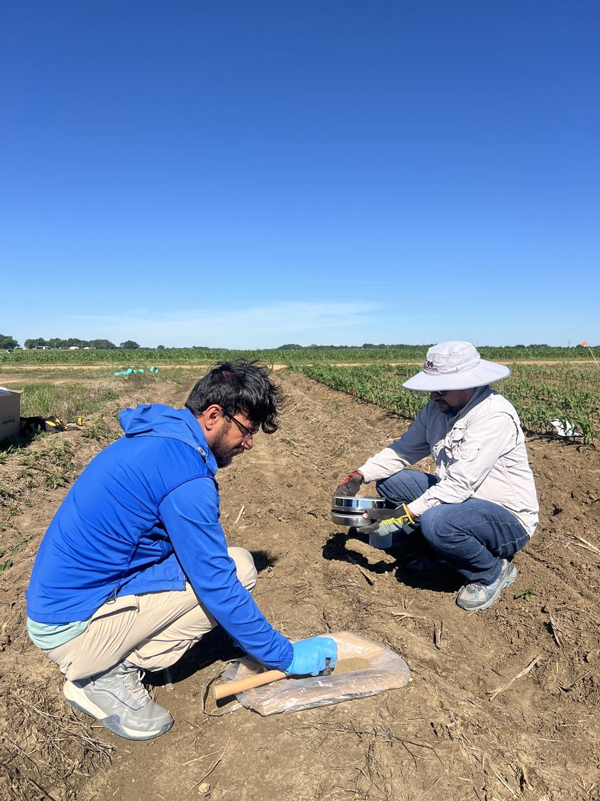
Processing soil samples in the fieldConfiguring data-logger and control electronics
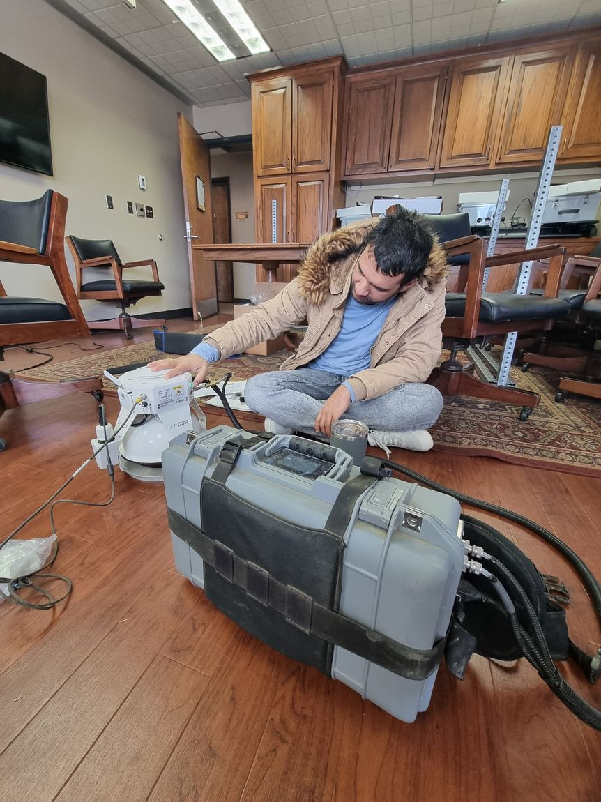
Testing a LI-COR trace-gas analyzerWiring an eddy covariance control systemPresenting research at a national conference
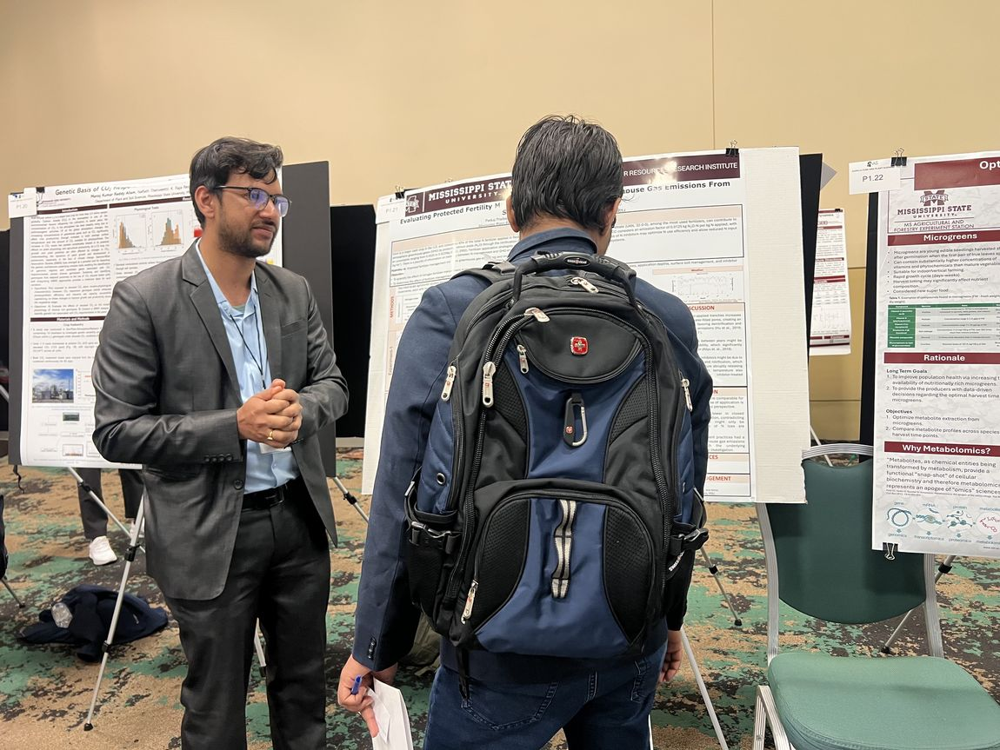
Discussing results at a research symposium
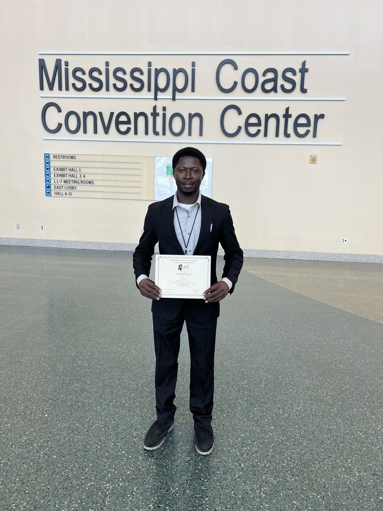
A lab member recognized with a research awardLab members at the Mississippi Academy of Sciences meeting